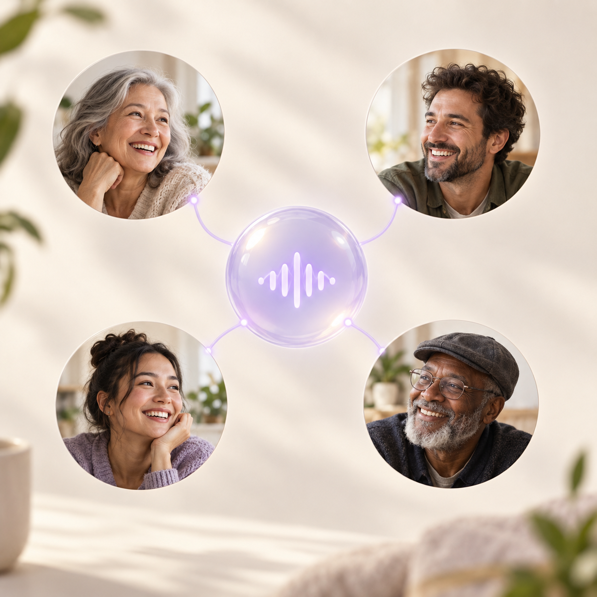
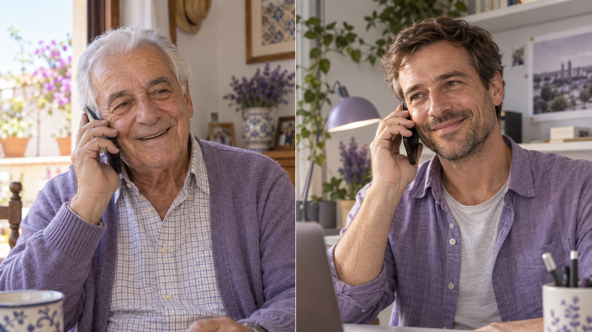
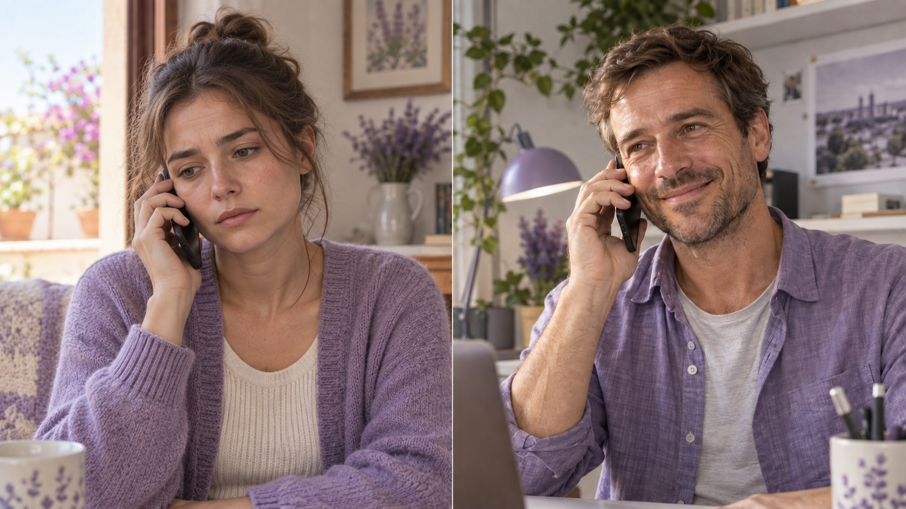
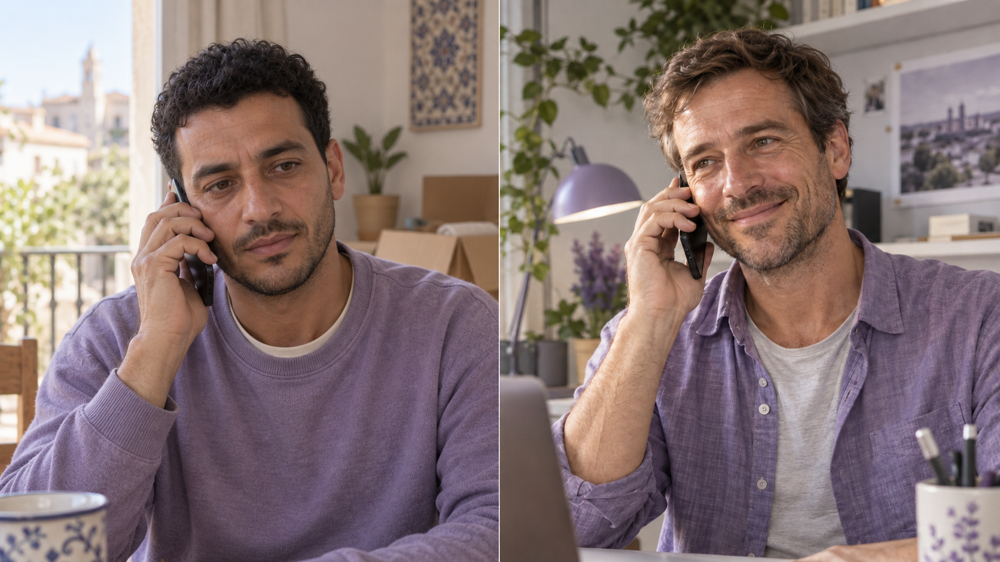
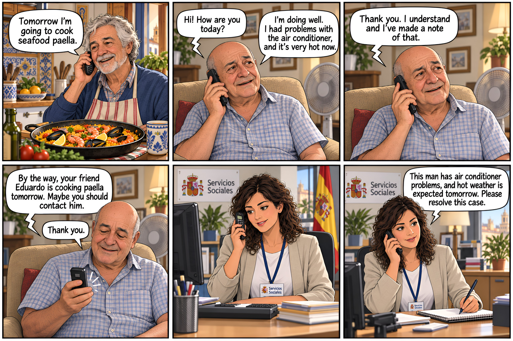

Adults in Spain experiencing loneliness
20%
SoledadES · 2024 · adults 18+ ↗A friendly call is on its way to Carmen.
▂ ▅ ▃ ▆ ▂ ▄A proactive agent that listens, remembers
and keeps people connected to their circle.
“José is making paella next week.”

Incoming & outgoing calls
Carrier registration & authentication · SIP 1.14.0Rooms & real-time audio
Self-hosted Server 1.13.6Profile + shared prompt
Python 3.12 · LiveKit Agents 1.8.1People, profiles, prompts & calls
FastAPI · Uvicorn · PydanticGPT-Live-1
marin voice · GPTLiveModelDocker Compose · Redis 7.4 · persistent volumes
7 services + one-time SIP setup. External: OpenAI & Orange. No LiveKit Cloud required.Local audio + JSON / JSONL transcripts
Linked to each person and call. Scoped API bearer tokens + temporary browser room tokens.Personalized conversations & stored call history
Planned: transcript memory, automatic profile updates, family news sharing, wellbeing escalation & individual login.Flag possible changes for professional review.
Something important? A call tomorrow. All well? Within two weeks.
Your life stories, saved through conversation.
Call the agent whenever you need it.
Want to dance? The agent suggests someone in your circle to invite.
Your monthly recap, shared on X with approval.
Government programmes that connect residents.
For families caring for parents and relatives.



